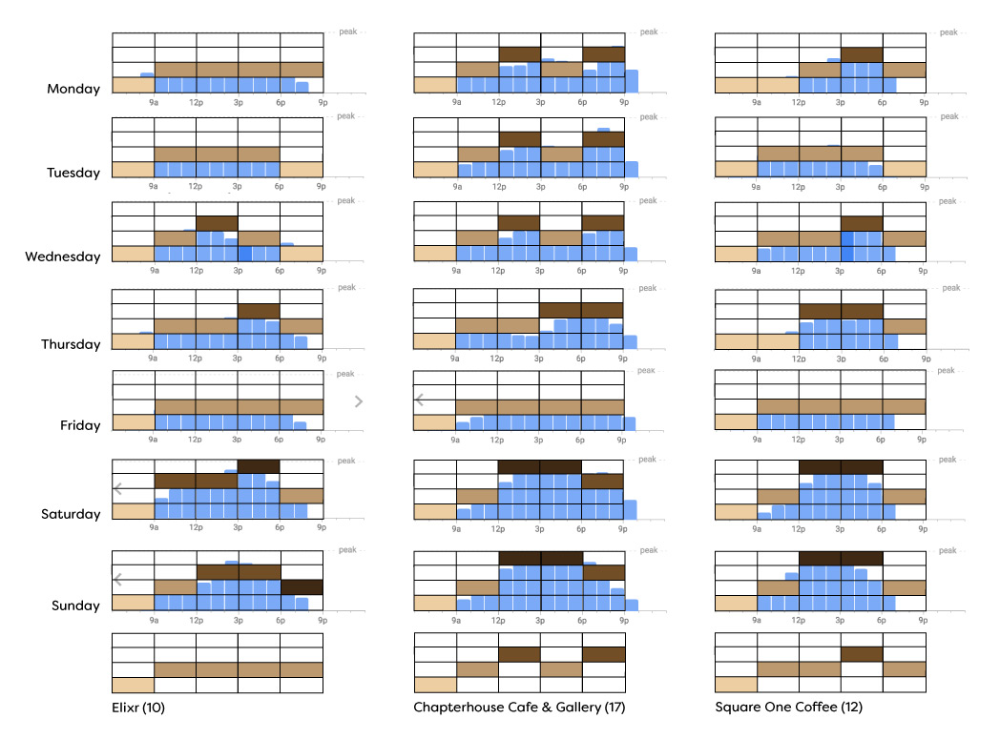
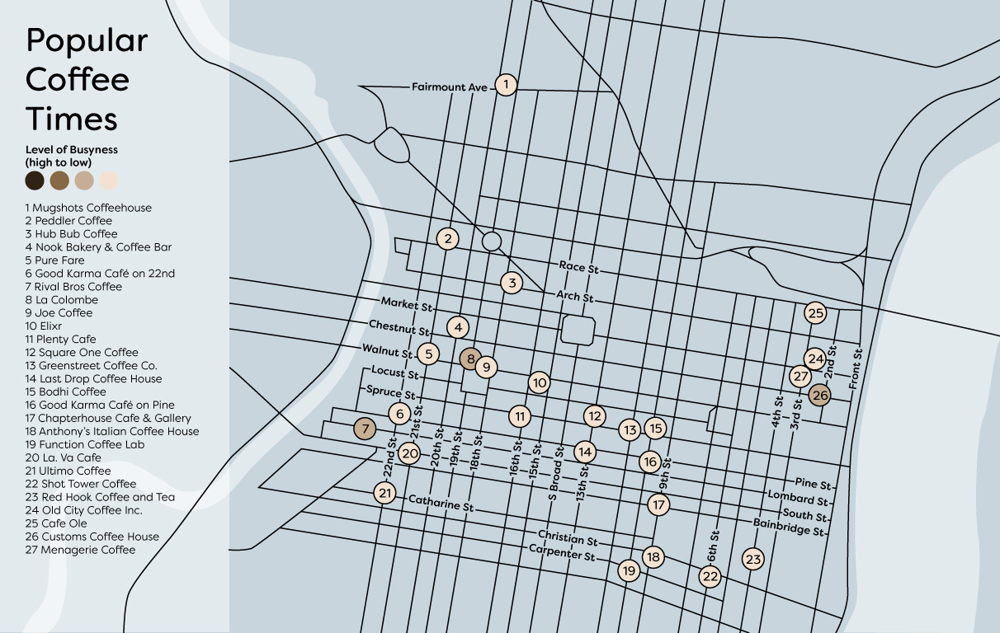

Map of Philadelphia, PA that shows the busyness of coffee shops throughout the day. Data was abstracted from Google's Popular Times feature and the base map was traced from Google Maps and manipulated in Illustrator. Colors were based off of different types of coffee - espresso, latte, americano, iced coffee. The base color of the map was chosen to reflect the skyline of Philadelphia.
Google Maps, Google Popular Times, Adobe Illustrator, Filson Soft Medium, Filson Soft Book
Data Abstraction

Map
